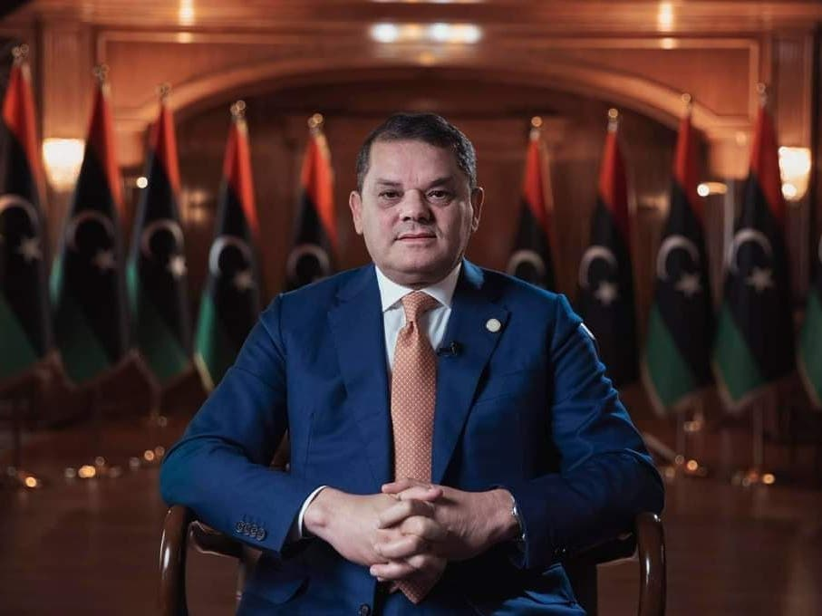

عبد الحميد الدبيبة: تحليل نقدي لمسيرته السياسية وتأثيرها على ليبيا
المقدمة
عبد الحميد الدبيبة، رئيس حكومة الوحدة الوطنية الليبية، هو شخصية مثيرة للجدل في المشهد السياسي الليبي منذ عام 2021. تظهر سيرته الذاتية ومسيرته السياسية تناقضات صارخة بين الخطاب الرسمي والممارسات الفعلية، مما يجعل منه نموذجاً للزعيم الذي يحافظ على سلطته عبر شبكات المصالح والتحالفات الهشة أكثر من كونه قائداً وطنياً يعمل من أجل مصلحة ليبيا الموحدة. هذا البحث يسلط الضوء على الجوانب المظلمة في مسيرة الدبيبة، بدءاً من خلفيته المشبوهة، مروراً بسياساته الفاشلة، وصولاً إلى دوره في تعميق الأزمة الليبية بدلاً من حلها.
النشأة والخلفية المشبوهة
وُلد عبد الحميد محمد الدبيبة في 13 فبراير 1959 بمدينة مصراتة، وحصل على ماجستير في الهندسة من كندا. لكن مسيرته المهنية المبكرة كانت ملتبسة، حيث ظهر اسمه لأول مرة في المشهد العام عام 2006 عندما تم تعيينه رئيساً للشركة الليبية للتنمية والاستثمار القابضة (ليدكو) المملوكة للدولة، وهو المنصب الذي حصل عليه بوساطة من صهره علي إبراهيم الدبيبة المقرب من نظام القذافي.
الأمر الأكثر إثارة للقلق هو أن التحقيقات التي أجريت بعد سقوط نظام القذافي كشفت أن شركة "ليدكو" كانت جزءاً من شبكة فساد كبيرة، حيث تم الاشتباه في اختلاس ما يصل إلى 9 مليارات دينار ليبي (حوالي 7 مليار دولار) من خلال عقود وهمية ومدفوعات مسبقة لمشاريع لم تُنفذ قط. كما أن البيانات المصرفية المسربة ضمن مشروع "أسرار سويسرية" كشفت أن عائلة الدبيبة، بما في ذلك صهره وابنه، كانوا يديرون شبكة من الحسابات المصرفية السرية في سويسرا وقبرص لتحويل الأموال خارج ليبيا.
الصعود السياسي المفاجئ

جاء صعود الدبيبة إلى سدة الحكم في فبراير 2021 مفاجئاً للكثيرين، حيث تم اختياره من قبل ملتقى الحوار السياسي الليبي في جنيف لرئاسة الحكومة الانتقالية بعد حصوله على 39 صوتاً من أصل 73. لكن هذا الاختيار كان محاطاً بشبهات كبيرة، حيث تشير تقارير إلى أن عملية التصويت شهدت تداولاً لمبالغ مالية مشبوهة لضمان دعم بعض الأعضاء للدبيبة.
اللافت أن الدبيبة، الذي كان يعيش في البرتغال بين 2014-2017 بعد إدراجه على قوائم العقوبات الدولية عقب سقوط نظام القذافي، استطاع العودة والظهور فجأة كمرشح توافقي. هذا التحول المفاجئ في مسيرته يطرح تساؤلات كبيرة حول القوى التي وقفت وراء دعمه وتمويل حملته للوصول إلى السلطة.
إدارة الأزمة السياسية: الفشل الذريع
واجهت حكومة الدبيبة منذ اليوم الأول تحديات جسيمة في تحقيق أهم مهامها المتمثلة في توحيد المؤسسات الليبية المنقسمة وإجراء الانتخابات في ديسمبر 2021. لكن بدلاً من العمل على تحقيق هذه الأهداف، انخرط الدبيبة في صراعات سياسية وعسكرية عمقت الانقسامات:
الفشل في إجراء الانتخابات: رغم أن المهمة الأساسية لحكومة الدبيبة كانت تمهيد الطريق للانتخابات، إلا أنه فشل تماماً في تحقيق هذا الهدف. بحلول مايو 2025، لم تُجرَ أي انتخابات، وبدلاً من ذلك لجأ الدبيبة إلى خطابات غامضة عن "اتخاذ خطوات حازمة" دون أي تفاصيل عملية.
الصراع مع المؤسسات الشرعية: رفض الدبيبة الاعتراف بقرارات مجلس النواب الليبي الذي سحب الثقة من حكومته في سبتمبر 2021، ثم عين لاحقاً فتحي باشاغا رئيساً للوزراء في فبراير 2022. هذا الموقف أظهر تمسك الدبيبة بالسلطة رغم فقدان الشرعية البرلمانية.
إضعاف مؤسسات الدولة: في أغسطس 2022، صوت البرلمان على إنهاء ولاية حكومة الوحدة واعتبار حكومة أسامة حماد الحكومة الشرعية، لكن الدبيبة رفض التسليم وقوّض بذلك سلطة المؤسسات الدستورية.
التحالفات المشبوهة واستخدام الميليشيات
أحد أكثر الجوانب إثارة للقلق في حكم الدبيبة هو اعتماده على تحالفات مشبوهة مع ميليشيات مسلحة وقوى خارجية:
العلاقة مع تركيا: تربط الدبيبة علاقات وثيقة مع تركيا، وهو ما أثار شكوكاً حول مدى استقلالية قراراته. هذه العلاقة جاءت على حساب المصالح الليبية العليا، حيث استخدم الدبيبة الدعم التركي لتعزيز موقعه الشخصي.
الاعتماد على الميليشيات: اعترف الدبيبة نفسه بأن "الميليشيات أصبحت أكبر من الدولة". وقد اتُهمت حكومته بدعم تشكيلات مسلحة واستخدامها لقمع المعارضين، كما حدث في أحداث طرابلس عندما استخدمت القوة المفرطة ضد متظاهرين سلميين.
فضائح الفساد: كشفت تحقيقات صحفية عن تورط الدبيبة في شبكات فساد واسعة، حيث تم توظيف المال العام لخدمة مصالح شخصية ولمنح امتيازات لمقربين منه. بل إن الدبيبة نفسه اتهم عبد الغني الككلي، أحد قادة الأجهزة الأمنية الذي اغتيل لاحقاً، بالسيطرة على 6 مصارف حكومية واستخدامها لأغراض شخصية.
الأزمة الدستورية وسقوط الشرعية
بحلول مايو 2025، بلغت أزمة شرعية حكومة الدبيبة ذروتها:
سحب الشرعية: أعلن المجلس الأعلى للدولة سحب الشرعية من حكومة الدبيبة، واصفاً إياها بأنها "ساقطة سياسياً وقانونياً وشعبياً". جاء هذا القرار بعد مظاهرات حاشدة في طرابلس ومدن أخرى رفضت استمرار حكومة الدبيبة.
استقالات الوزراء: تقدم 5 وزراء باستقالتهم احتجاجاً على سياسات الدبيبة، منهم نائب رئيس الوزراء رمضان أبوجناح ووزير الاقتصاد محمد الحويج. هذه الاستقالات الجماعية كشفت عن انهيار التحالفات الداخلية التي كان يعتمد عليها الدبيبة.
الرفض الشعبي: نصب المتظاهرون خياماً في ميدان الشهداء للاعتصام حتى إسقاط حكومة الدبيبة، وتمكن العشرات من اقتحام مقر رئاسة الحكومة في طرابلس. هذه المشاهد تؤكد أن الدبيبة فقد تماماً أي شرعية شعبية.
إيجابيات محدودة
رغم الانتقادات الكثيرة التي توجه لحكومة عبد الحميد الدبيبة وفشلها في تحقيق الانتخابات وتوحيد المؤسسات، يمكن ذكر بعض المحاولات الإيجابية المحدودة خلال فترة حكمه، مع التأكيد على أنها لم تكن كافية لإنقاذ الوضع الليبي:
محاولة تقليص نفوذ الميليشيات (جزئياً): أعلن الدبيبة عن حملة لمحاربة الميليشيات المسلحة، وادعى أن حكومته نجحت في دمج بعضها ضمن مؤسسات الدولة، بينما واجهت مجموعات أخرى مثل "جهاز دعم الاستقرار" بقيادة عبد الغني الككلي (غنيوة) عبر عمليات عسكرية. ومع ذلك، يبقى هذا الإجراء انتقائياً وغير شامل، حيث لا تزال ميليشيات أخرى تتمتع بنفوذ واسع.
خطاب حول مكافحة الفساد (نظرياً): تحدث الدبيبة عن ضرورة محاربة الفساد، واتهم بعض الميليشيات بالسيطرة على المصارف وابتزاز الدولة. لكن هذه التصريحات لم تترافق مع إصلاحات مؤسسية حقيقية، بل ظهرت استقالات وزراء بسبب اتهامات بالفساد داخل حكومته نفسها.
الحفاظ على بعض الاستقرار النسبي في غرب ليبيا (مؤقتاً): حاولت حكومة الوحدة الوطنية الحفاظ على هدوء نسبي في طرابلس مقارنة بالفوضى السابقة، لكن هذا "الاستقرار" كان هشاً ومبنياً على تحالفات مع قوى مسلحة، مما جعله غير مستدام.
الاعتراف الدولي (رغم فقدان الشرعية المحلية): حافظت حكومة الدبيبة على اعتراف دولي كحكومة شرعية لليبيا لفترة، مما سهل بعض التعاملات الاقتصادية والدبلوماسية، لكن هذا الاعتراف بدأ يتآكل بعد سحب المجلس الأعلى للدولة الشرعية عنها.
الخلاصة
ما تم ذكره من إيجابيات يبقى محدوداً وغير كافٍ لتحقيق استقرار حقيقي في ليبيا، خاصة مع فشل الانتخابات، وتعميق الانقسامات، وانهيار الشرعية الشعبية والدستورية. معظم هذه الإجراءات كانت تكتيكية لضمان بقاء الدبيبة في السلطة، وليست جزءاً من استراتيجية إصلاحية شاملة.